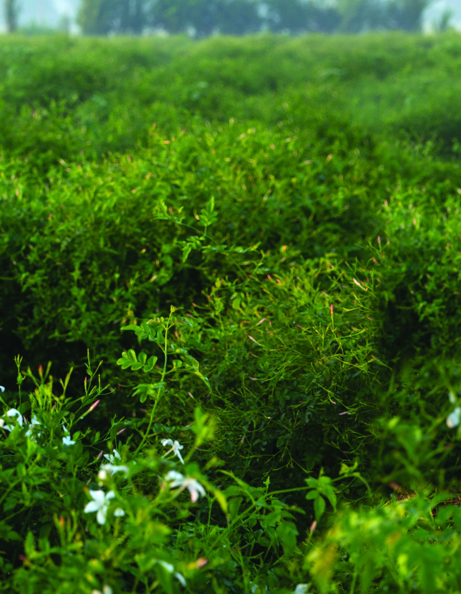
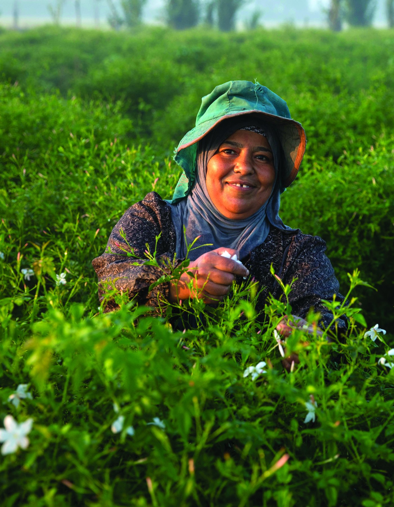
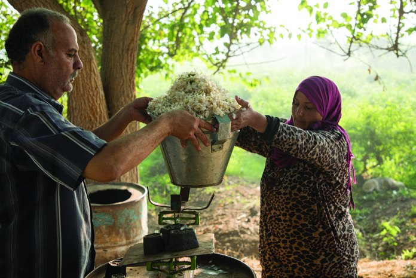
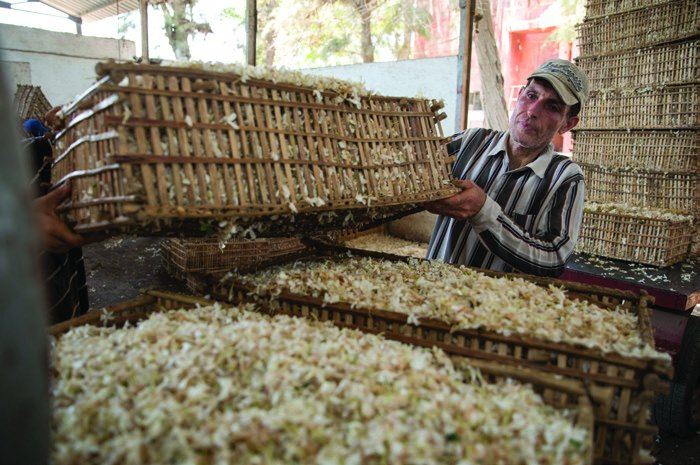
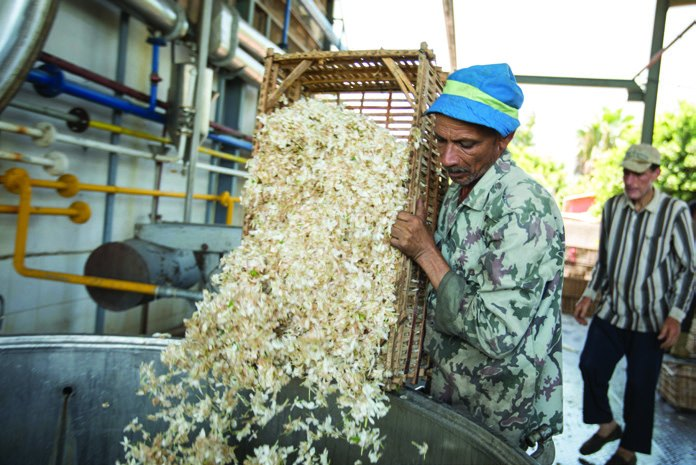
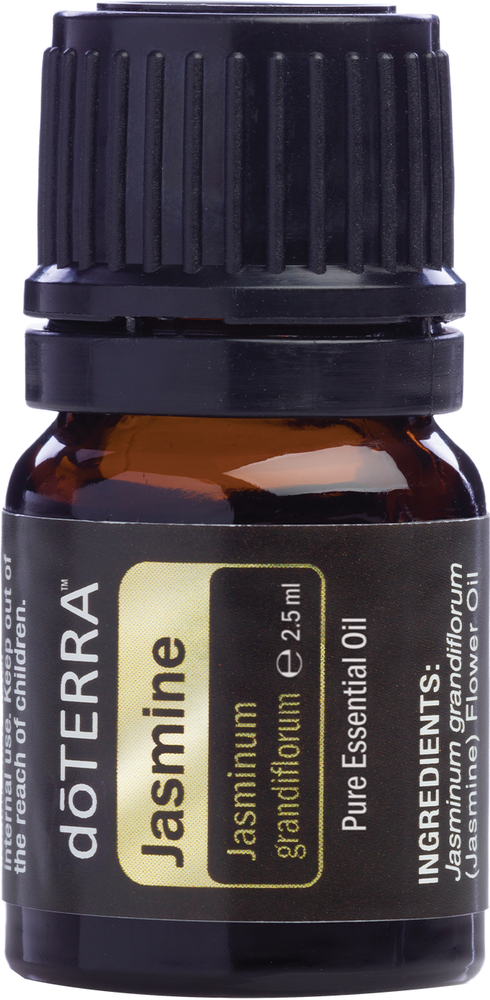
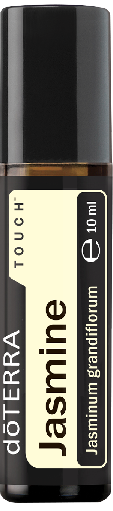
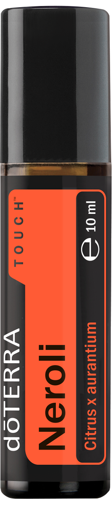
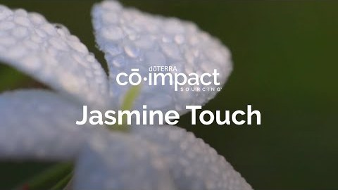
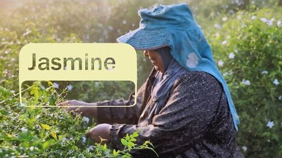

Jaśmin i neroli
Neroli i jaśmin dōTERRA pochodzą z tych samych egipskich pól i z tej samej pracy: ręcznego zbioru kwiat po kwiecie, zaczynanego przed świtem. Poniżej to, co o obu wiadomo — pochodzenie, dwie różne metody ekstrakcji i skala zbioru.

NeroliCitrus aurantium — kwiat drzewa gorzkiej pomarańczy
Neroli to olejek z kwiatu drzewa gorzkiej pomarańczy. Do Egiptu przywieźli je Arabowie w 642 roku i egipska odmiana pozostała praktycznie nietknięta — w odróżnieniu od większości drzew pomarańczowych na świecie, które przeszły krzyżowanie odmian.
Nazwa pochodzi od tytułu Anne Marie Orsini, księżnej Bracciano i księżniczki Neroli, żyjącej pod koniec XVII wieku. Miała być tak zafascynowana esencją z kwiatu pomarańczy, że się w niej kąpała, a zwyczaj rozpowszechniła wśród swojego otoczenia.
Zbiór jest krótki: kwiat neroli nadaje się do zbierania tylko od połowy marca do końca kwietnia. Poza tym oknem drzewo nie da już surowca na ten sezon.
To jeden z rzadszych olejków cytrusowych — nie ze względu na rzadkość samego drzewa, ale dlatego, że jedno drzewo pozwala zebrać tylko jedną ze swoich trzech możliwych części.
Uwaga na marginesie — dōTERRA Wild Orange nie pochodzi z tego drzewa, tylko z pomarańczy słodkiej.
JaśminJasminum grandiflorum — rodzina oliwkowatych (Oleaceae)
Jaśmin to ponad 200 gatunków pnączy i krzewów. Jego zapach był ceniony w Chinach, Japonii i w całej Azji Południowo-Wschodniej; w Pakistanie jaśmin jest kwiatem narodowym.
Od pozostałych olejków odróżnia go sposób pozyskania. Jaśmin można dziś otrzymać na dwa sposoby: jako absolut, wydobywany rozpuszczalnikiem, albo jako olejek destylowany parą. Przez całą wcześniejszą historię perfumerii istniał tylko ten pierwszy.
Absolut powstaje w dwóch krokach. Najpierw z płatków wydobywa się olejek razem z woskami — powstaje półprodukt zwany konkretem. Dopiero potem wosk i parafiny oddziela się od związków lotnych i zostaje absolut. Dzięki temu w produkcie końcowym zostaje więcej związków aromatycznych.
Na 5 ml absolutu potrzeba około 21 000 świeżo zerwanych płatków. Destylacja parowa długo w ogóle nie wchodziła w grę — kwiat jaśminu jest na nią zbyt delikatny. Zmieniło się to dopiero w 2020 roku.
Rok, w którym jaśmin po raz pierwszy dał olejek eteryczny
Tradycyjnie jaśminu nie można było destylować jak innych kwiatów ze względu na delikatną naturę kwiatów. Zamiast tego stworzyliśmy z kwiatów cenny, wysoce skoncentrowany absolut. Jednak po latach poszukiwań, badań i innowacji naszemu dostawcy surowca udało się z powodzeniem wydestylować olejek eteryczny z jaśminu. Dzięki temu olejek eteryczny z jaśminu jest dostępny po raz pierwszy w historii!
dōTERRA od dekad próbowała opanować destylację parową kwiatu jaśminu. Problemem nie była tylko technologia — destylacja wymaga znacznie więcej kwiatów niż ekstrakcja rozpuszczalnikiem, a cały zbiór i tak szedł na absolut dla perfumerii. Surowca na eksperymenty po prostu nie było.
Zmieniła to pandemia. Światowy popyt na jaśminowy absolut do perfum spadł o około 80%, a ryzyko, że rolnicy zaczną karczować plantacje, oceniano na mniej więcej 50%.
dōTERRA wykupiła zbiór, żeby zbieraczki nie straciły pracy. Skutkiem ubocznym był pierwszy w historii nadmiar kwiatów — wystarczający, żeby spróbować destylacji. Udało się na przełomie października i listopada 2020 roku, a gotowy olejek pokazano na Leadership Retreat wiosną 2021.
Olejek eteryczny różni się od absolutu profilem zapachowym i chemią — ma więcej nut kwiatowych. W 2021 roku dōTERRA mówiła, że powtórzenie tego jest mało prawdopodobne i że będzie to prawdopodobnie jedyna okazja, żeby go powąchać.
Pięć lat później okazało się inaczej. Destylowany olejek jaśminowy jest dziś normalną pozycją w katalogu — to właśnie ta buteleczka 2,5 ml z etykietą „Pure Essential Oil”, sprzedawana z limitem jednej sztuki na zamówienie. Osobnej buteleczki z samym absolutem (5 ml) nie ma już w sprzedaży — nierozcieńczony jaśmin kupuje się dziś w postaci destylatu.
Kwiat po kwiecie, ręcznie

Jaśmin i neroli łączy miejsce uprawy: oba pochodzą z Egiptu. Łączy je też to, że żadnego z nich nie zbierają maszyny. Kwiaty zrywa się ręcznie, pojedynczo.
Nocna pora zbioru nie jest kaprysem organizacji pracy. Jaśmin to roślina nocna — nie zapylają go pszczoły, tylko owady przelatujące po ciemku z kwiatu na kwiat. Kwiat pachnie i oddaje najwięcej w nocy, więc wtedy się go zrywa.
Skala robi wrażenie dopiero w przeliczeniu: na 1,3 kg absolutu jaśminowego trzeba 907 kg kwiatów, czyli około sześciu milionów sztuk zerwanych po jednej.
Każdy zbieracz ma na dany dzień przydzieloną określoną liczbę krzewów. To ograniczenie jest celowe — chodzi o przedłużenie życia roślin. Świeżo posadzony krzew daje zresztą pierwsze kwiaty dopiero po mniej więcej pół roku.
Hele pracuje szybciej z każdym rokiem, dzięki czemu wcześniej wraca do innych zajęć i do rodziny. Mówi, że zbiór jest też okazją do rozmowy: większość zbieraczek to kobiety w podobnej sytuacji, więc czas mija szybciej.
Wypłaty są uczciwe i na czas, a zbieracze są obecni przy ważeniu swojego zbioru i widzą, ile faktycznie zostało zapisane. Hele mówi, że wybrała jaśmin, bo płaci lepiej niż inne uprawy, a jedynym minusem jest wstawanie w środku nocy. W wielu rodzinach to właśnie zbieraczki są głównymi żywicielkami.



Każdy pojedynczy kwiat zmienia coś nie tylko u osoby, która potem używa olejku, ale też u osoby, która ten kwiat zerwała.
Produkty z tych kwiatów



Skąd te informacje
Część powyższych szczegółów — nocne zapylanie, konkret jako etap pośredni, historia olejku eterycznego z 2021 roku i liczby zbioru na jedną osobę — nie ma ich w magazynie. Pochodzą z trzech filmów dōTERRA. Dwa krótsze to fragmenty tej samej etiudy, którą w całości pokazano na Leadership Retreat.

1:27
1:24